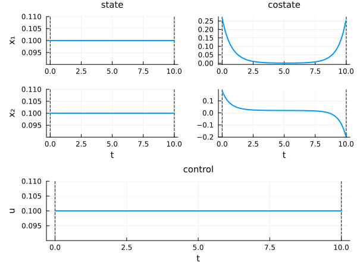
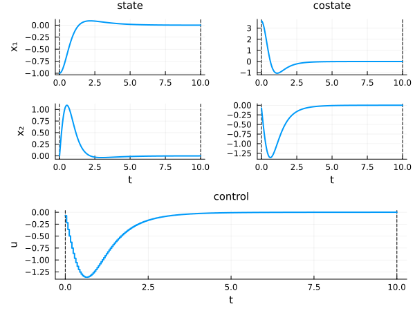

Initial guess (or iterate) for the resolution
We present the different possibilities to provide an initial guess to solve an optimal control problem with the OptimalControl.jl package.
First, we need to import OptimalControl.jl to define the optimal control problem and NLPModelsIpopt.jl to solve it. We also need to import Plots.jl to plot solutions.
using OptimalControl
using NLPModelsIpopt
using PlotsFor the illustrations, we define two optimal control problems to showcase the different ways to specify initial guesses.
The first problem uses default component labels (x₁, x₂ for the state):
t0 = 0; tf = 10; α = 5
ocp1 = @def begin
t ∈ [t0, tf], time
x ∈ R², state
u ∈ R, control
x(t0) == [ -1, 0 ]
x₁(tf) == 0
ẋ(t) == [ x₂(t), x₁(t) + α*x₁(t)^2 + u(t) ]
x₂(tf)^2 + ∫( 0.5u(t)^2 ) → min
endThe second problem uses custom component labels (q, v for the state, tf for the variable) and a different time variable name (s instead of t):
ocp2 = @def begin
tf ∈ R, variable
s ∈ [0, tf], time
x = (q, v) ∈ R², state
u ∈ R, control
-1 ≤ u(s) ≤ 1
tf ≥ 0
q(0) == -1
v(0) == 0
q(tf) == 0
v(tf) == 0
ẋ(s) == [v(s), u(s)]
tf → min
end- The
@initmacro uses the labels declared in the@defblock. Forocp1, you can usex,x₁,x₂, andu. Forocp2, you can usex,q,v,u, andtf. - The
@initmacro uses the time variable name from the@defblock. Forocp1, uset(e.g.,x(t) := ...). Forocp2, uses(e.g.,q(s) := ...). - When components are not explicitly named in
@def(as inocp1withx ∈ R²), they receive default labels with subscripted indices:x₁,x₂, etc. These default names are usable in@initjust like custom labels. - This allows for more readable initial guess specifications that match your problem definition.
Default initial guess
We first solve the problem without giving an initial guess. This will default to initialize all variables to 0.1.
To visualize the default initial guess before solving, we can run the solver with max_iter=0:
# visualize the default initial guess (no iterations)
sol_init = solve(ocp1; init=nothing, max_iter=0, display=false)
plot(sol_init; size=(600, 450))
This technique works with any initial guess specification. By setting max_iter=0, the solver stops immediately after initialization, allowing you to visualize the initial guess before the optimization process begins.
Now let us solve the problem completely:
# solve the optimal control problem without initial guess
sol = solve(ocp1; display=false)
println("Number of iterations: ", iterations(sol))Number of iterations: 10Let us plot the solution of the optimal control problem.
plot(sol; size=(600, 450))
Note that the following formulations are equivalent to not giving an initial guess.
sol = solve(ocp1; init=nothing, display=false)
println("Number of iterations: ", iterations(sol))
sol = solve(ocp1; init=(), display=false)
println("Number of iterations: ", iterations(sol))Number of iterations: 10
Number of iterations: 10To get the number of iterations of the solver, check the iterations function.
To reduce the number of iterations and improve the convergence, we can give an initial guess to the solver. The recommended way is to use the @init macro, which provides a clean syntax for specifying initial values.
Initial guess with @init
The @init macro allows you to specify initial values for state and control using the syntax label(t) := expression. For optimization variables (like tf), use label := value since they are not functions of time.
@init at a Glance
Complete syntax:
ig = @init ocp begin
# initial guess specifications
endThe ocp argument is required for label validation and context checking.
Core syntax: label(time_var) := expression
| Component | Has (t)? | Uses :=? | Example |
|---|---|---|---|
| State/Control | ✅ Yes | ✅ Yes | u(t) := 2 |
| Variable | ❌ No | ✅ Yes | tf := 2.0 |
| Alias | ❌ No | ❌ No (use =) | a = 0.5 |
Dimensions:
- 1D → scalar:
u(t) := 2 - 2D → vector:
u(t) := [1, 2]
Initialization types:
| Type | 1D Example | 2D Example |
|---|---|---|
| Constant | u(t) := 2 or u := 2 | x(t) := [1, 2] or x := [1, 2] |
| Function | u(t) := sin(t) | x(t) := [sin(t), cos(t)] |
| Grid | u(T) := [0, 1, 2] | x(T) := [[0,0], [1,1], [2,2]] |
| Grid (matrix) | — | x(T) := [0 0; 1 1; 2 2] |
where T = [0.0, 0.5, 1.0] is the time grid.
- Use the same time variable as in your
@defblock (t,s, etc.) - 1D: scalar values (not
[value]) - 2D: vectors
[v1, v2]or vector of vectors[[v1, v2], ...]or matrix - Variables and aliases: no time argument
- Constant functions: use either
u(t) := 2or the simplifiedu := 2
Syntax rules
The left-hand side of := and = follow strict rules.
Left-hand side of := : only labels declared in the optimal control problem:
- the time variable name declared in
@def(t,s, ...), used as the argument of state/control functions - the state, control or variable label, either its global name (
x,u,tf) or the name of one of its components (q,v,x₁,x₂, ...)
Left-hand side of = : arbitrary alias names, local to the @init block. Aliases are not labels of the problem; they are just convenient names to factor out constants or subexpressions.
Right-hand side : any Julia expression, which may reference the time variable, previously defined aliases, and other labels defined earlier in the block (see Cross-spec substitution).
Default component names
When components are not explicitly named in @def, they receive default labels with subscripted indices. For example, ocp1 declares x ∈ R² without naming the components, so the default labels x₁ and x₂ are used:
# use default component names x₁, x₂
ig = @init ocp1 begin
x₁(t) := -1.0 + t/10
x₂(t) := 0.0
u(t) := -0.2
end
sol = solve(ocp1; init=ig, display=false)
println("Number of iterations: ", iterations(sol))Number of iterations: 14No indexed syntax
The indexed syntax x[i](t) or x[i:j](t) is not supported on the left-hand side of :=. @init works at the level of labels, not array indices.
- ❌
x[1](t) := ...,x[1:2](t) := ... - ✅
x(t) := ...(global) orx₁(t) := ...,x₂(t) := ...,q(t) := ...,v(t) := ...(per component)
Constant initial guess
To initialize with constant values, use constant expressions in the function syntax:
For constant functions, you can also use the simplified syntax without the time argument:
u(t) := 2is equivalent tou := 2x(t) := [1, 2]is equivalent tox := [1, 2]
This shorter syntax is only available for constant expressions.
# initialize with constant functions
ig = @init ocp1 begin
x(t) := [-0.2, 0.1] # constant vector function
u(t) := -0.2 # constant scalar function
end
sol = solve(ocp1; init=ig, display=false)
println("Number of iterations: ", iterations(sol))Number of iterations: 9Using custom labels makes the initialization more readable:
# initialize individual components with constant values
# note: use 's' as the time variable (matching ocp2 definition)
ig = @init ocp2 begin
q(s) := -0.2 # constant function for q
v(s) := 0.0 # constant function for v
u(s) := 0.1 # constant function for u
tf := 2.0 # variable (not a function)
end
sol = solve(ocp2; init=ig, display=false)
println("Number of iterations: ", iterations(sol))Number of iterations: 15Partial initialization
You can initialize only some components; missing components will default to 0.1:
# initialize only the control
ig = @init ocp1 begin
u(t) := -0.2
end
sol = solve(ocp1; init=ig, display=false)
println("Number of iterations: ", iterations(sol))Number of iterations: 7# initialize only state components and variable
ig = @init ocp2 begin
q(s) := -0.5
v(s) := 0.2
tf := 2.0
end
sol = solve(ocp2; init=ig, display=false)
println("Number of iterations: ", iterations(sol))Number of iterations: 12Time-dependent functions
For non-constant functions, use any expression involving t:
# initialize with time-dependent functions
ig = @init ocp1 begin
x(t) := [-0.2t, 0.1t] # time-dependent vector
u(t) := -0.2t # time-dependent scalar
end
sol = solve(ocp1; init=ig, display=false)
println("Number of iterations: ", iterations(sol))Number of iterations: 14# initialize individual components with time-dependent functions
ig = @init ocp2 begin
q(s) := sin(s) # time-dependent
v(s) := cos(s) # time-dependent
u(s) := s # time-dependent
tf := 2.0 # variable (constant)
end
sol = solve(ocp2; init=ig, display=false)
println("Number of iterations: ", iterations(sol))Number of iterations: 32Using aliases
You can define Julia aliases within the @init block using = (single equals, without time argument):
# use aliases for constants and expressions
ig = @init ocp2 begin
amplitude = 0.5
phase = sin(amplitude)
φ = 2π * s
q(s) := amplitude * sin(φ)
v(s) := amplitude * cos(φ)
u(s) := phase # constant function using alias
tf := 2.0 # variable
end
sol = solve(ocp2; init=ig, display=false)
println("Number of iterations: ", iterations(sol))Number of iterations: 12Cross-spec substitution
Specifications inside a single @init block can reference each other, from top to bottom. A label defined on an earlier line can be reused in the right-hand side of a later specification.
Rules:
- A reference only resolves to a label (or alias) defined earlier in the block.
- Substitution happens by name: the referenced label is replaced by its definition when the later expression is evaluated.
- References across different grid arguments are not substituted (see note at the end of this section).
Temporal → temporal
A time-dependent spec can reference another time-dependent spec:
# v depends on q
ig = @init ocp2 begin
q(s) := sin(s)
v(s) := 1.0 + q(s)
u(s) := 0.0
tf := 2.0
end
sol = solve(ocp2; init=ig, display=false)
println("Number of iterations: ", iterations(sol))Number of iterations: 35Transitive chain
Substitutions chain transitively: u below references v, which itself references q.
# q → v → u
ig = @init ocp2 begin
q(s) := sin(s)
v(s) := 1.0 + q(s)
u(s) := s + v(s)^2
tf := 2.0
end
sol = solve(ocp2; init=ig, display=false)
println("Number of iterations: ", iterations(sol))Number of iterations: 26Constant → temporal
A temporal spec can reference a constant-valued component defined earlier:
# v(s) uses the constant value of q
ig = @init ocp2 begin
q := -1.0
v(s) := q + sin(s)
u(s) := 0.0
tf := 2.0
end
sol = solve(ocp2; init=ig, display=false)
println("Number of iterations: ", iterations(sol))Number of iterations: 39Constant → constant
A constant spec can reference another constant, including for variable components. Here we define a small OCP whose variable has two components (tf, a):
ocp_var2 = @def begin
w = (tf, a) ∈ R², variable
t ∈ [0, 1], time
x ∈ R, state
u ∈ R, control
x(0) == 0
x(1) - a == 0
ẋ(t) == u(t)
∫(0.5u(t)^2) → min
end
ig = @init ocp_var2 begin
tf := 1.0
a := tf + 0.5
end
w = variable(ig)
println("tf = ", w[1], ", a = ", w[2])tf = 1.0, a = 1.5Mixing aliases and cross-spec references
Aliases (with =) and cross-spec references (with :=) can be freely combined:
ig = @init ocp2 begin
A = 2.0 # alias
q(s) := A * sin(s) # uses alias
v(s) := q(s) + 1.0 # references q
u(s) := 0.0
tf := 2.0
end
sol = solve(ocp2; init=ig, display=false)
println("Number of iterations: ", iterations(sol))Number of iterations: 21When a spec uses a grid argument (e.g. q(T) := Dq with T a time vector), it is not substituted into other temporal specs written with the time variable (v(s) := ...). The two live in different evaluation contexts. Use either temporal functions throughout, or grids throughout, when you need to chain references.
Vector initial guess (interpolated)
You can provide initial values on a time grid using the syntax label(T) := data, where T is a time vector and data contains the corresponding values.
Full block initialization on a grid
# define time grid and data
T = [0.0, 5.0, 10.0]
X = [[-1.0, 0.0], [-0.5, 0.5], [0.0, 0.0]]
U = [0.0, -0.5, 0.0]
ig = @init ocp1 begin
x(T) := X
u(T) := U
end
sol = solve(ocp1; init=ig, display=false)
println("Number of iterations: ", iterations(sol))Number of iterations: 14Per-component grids
Different components can use different time grids:
# different grids for different components
Sq = [0.0, 1.0, 2.0]
Dq = [-1.0, -0.5, 0.0]
Sv = [0.0, 2.0]
Dv = [0.0, 0.0]
Su = [0.0, 1.0, 2.0]
Du = [0.0, 0.5, 0.0]
ig = @init ocp2 begin
q(Sq) := Dq
v(Sv) := Dv
u(Su) := Du
tf := 2.0
end
sol = solve(ocp2; init=ig, display=false)
println("Number of iterations: ", iterations(sol))Number of iterations: 12Matrix format
For state initialization, you can also use a matrix where each row corresponds to a time point:
# matrix format for state data
T = [0.0, 5.0, 10.0]
Xmat = [
-1.0 0.0;
-0.5 0.5;
0.0 0.0
]
U = [0.0, -0.5, 0.0]
ig = @init ocp1 begin
x(T) := Xmat
u(T) := U
end
sol = solve(ocp1; init=ig, display=false)
println("Number of iterations: ", iterations(sol))Number of iterations: 14Mixed initial guess
You can freely mix constant functions, time-dependent functions, and grid-based initializations in a single @init block:
# mix different initialization types
T = [0.0, 5.0, 10.0]
X = [[-1.0, 0.0], [-0.5, 0.5], [0.0, 0.0]]
ig = @init ocp1 begin
x(T) := X # grid-based for state
u(t) := -0.2 * sin(t) # time-dependent function for control
end
sol = solve(ocp1; init=ig, display=false)
println("Number of iterations: ", iterations(sol))Number of iterations: 14# another mix: constant and time-dependent functions
ig = @init ocp2 begin
q(s) := -1.0 + s/2.0 # time-dependent function
v(s) := 0.0 # constant function
u(s) := 0.1 * s # time-dependent function
tf := 2.0 # variable
end
sol = solve(ocp2; init=ig, display=false)
println("Number of iterations: ", iterations(sol))Number of iterations: 17Solution as initial guess (warm start)
You can use an existing solution directly as an initial guess. The dimensions of the state, control and optimization variable must coincide. This particular feature allows an easy implementation of discrete continuations.
# generate an initial solution
sol_init = solve(ocp1; display=false)
# solve the problem using solution as initial guess
sol = solve(ocp1; init=sol_init, display=false)
println("Number of iterations: ", iterations(sol))Number of iterations: 0You can also manually extract data from a solution and use it within an @init block:
# extract functions from solution
x_fun = state(sol_init)
u_fun = control(sol_init)
# use them in @init
ig = @init ocp1 begin
x(t) := x_fun(t)
u(t) := u_fun(t)
end
sol = solve(ocp1; init=ig, display=false)
println("Number of iterations: ", iterations(sol))Number of iterations: 0Costate / multipliers
For the moment there is no option to provide an initial guess for the costate / multipliers.
Legacy: NamedTuple construction
While the @init macro is the recommended approach, you can still construct initial guesses using direct NamedTuple syntax for backward compatibility.
Basic tuple syntax
# direct tuple construction with constants
sol = solve(ocp1; init=(state=[-0.2, 0.1], control=-0.2), display=false)
println("Number of iterations: ", iterations(sol))Number of iterations: 9Using component labels
The tuple syntax now supports using component labels as keys:
# use component labels in the tuple
sol = solve(ocp2; init=(q=-1.0, v=0.0, u=0.1, tf=2.0), display=false)
println("Number of iterations: ", iterations(sol))Number of iterations: 15Grid-based initialization with tuples
For grid-based initialization, the syntax uses (time_vector, data) pairs:
# grid-based with tuple syntax
T = [0.0, 5.0, 10.0]
X = [[-1.0, 0.0], [-0.5, 0.5], [0.0, 0.0]]
U = [0.0, -0.5, 0.0]
sol = solve(ocp1; init=(state=(T, X), control=(T, U)), display=false)
println("Number of iterations: ", iterations(sol))Number of iterations: 14You can also mix component labels with grid syntax:
# per-component grids with tuple syntax
Tq = [0.0, 1.0, 2.0]
Dq = [-1.0, -0.5, 0.0]
sol = solve(ocp2; init=(q=(Tq, Dq), v=0.0, u=0.1, tf=2.0), display=false)
println("Number of iterations: ", iterations(sol))Number of iterations: 15